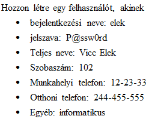
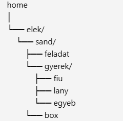

Ez az oldal a Linux témakört mutatja be. Itt találhatók információk a Linux operációs rendszerről, parancsokról, disztribúciókról, és egyéb hasznos tudnivalókról.
Feladat: vizsgazo felhasználó hozzáadása a nyugger csoporthoz
sudo usermod -aG nyugger vizsgazo
Feladat: A vizsga könyvtár csoportjának átadása a nyugger csoportnak
sudo chown :nyugger vizsga
Feladat: Jogosultságok beállítása: tulajdonosnak és csoportnak minden jog, másnak semmi
sudo chmod 770 vizsga
Feladat: Számítás alapja
A 770 jog (engedély) három számjegyből áll:
Az első szám a tulajdonos (user) jogait adja meg,
a második a csoport (group) jogait,
a harmadik pedig mindenki másét (others).
Minden jog egy számértéket kap:
read (olvasás) = 4
write (írás) = 2
execute (végrehajtás) = 1
A számjegyek összege adja az engedélyt.
Feladat: Felhasználó létrehozása a megadott adatokkal

sudo useradd -m -c "Vicc Elek,102,12-23-33,244-455-555,informatikus" elek
echo 'elek:P@ssw0rd'
Ellenőrzés:
getent passwd elek
Feladat: Könyvtárszerkezet létrehozása az elek felhasználó home könyvtárában

sudo -u elek mkdir -p /home/elek/sand/{feladat,gyerek/{fiu,lany,egyeb},box}
Feladat: A jatek.txt fájl létrehozása a feladat könyvtárban, tartalma: tarsasjatek
echo "tarsasjatek" | sudo -u elek tee /home/elek/sand/feladat/jatek.txt
Feladat: A jatek.txt fájl másolása a box könyvtárba
sudo -u elek cp /home/elek/sand/feladat/jatek.txt /home/elek/sand/box/
Feladat: jatszotarsak csoport létrehozása, elek felhasználó hozzáadása
sudo groupadd jatszotarsak
sudo usermod -aG jatszotarsak elek
Feladat: vizsga könyvtár tulajdonjogának átadása az elek felhasználónak